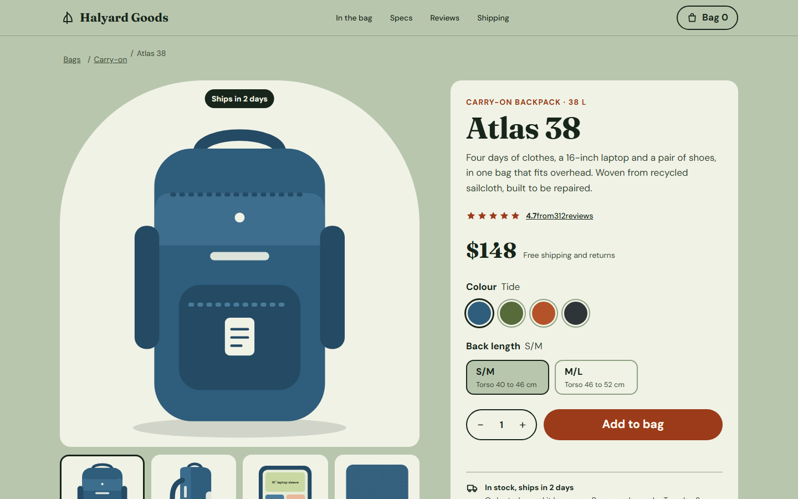
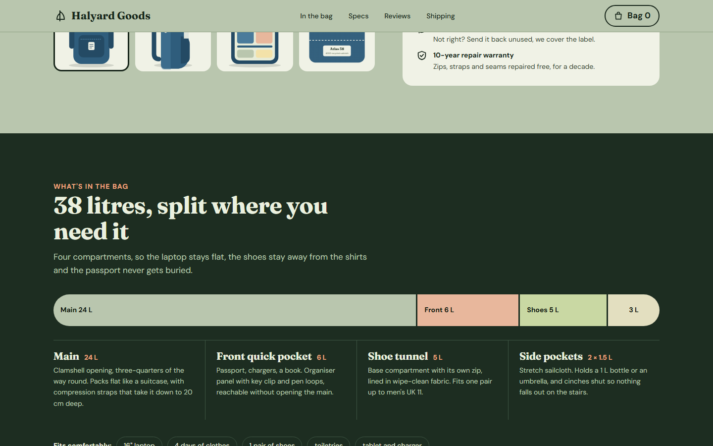
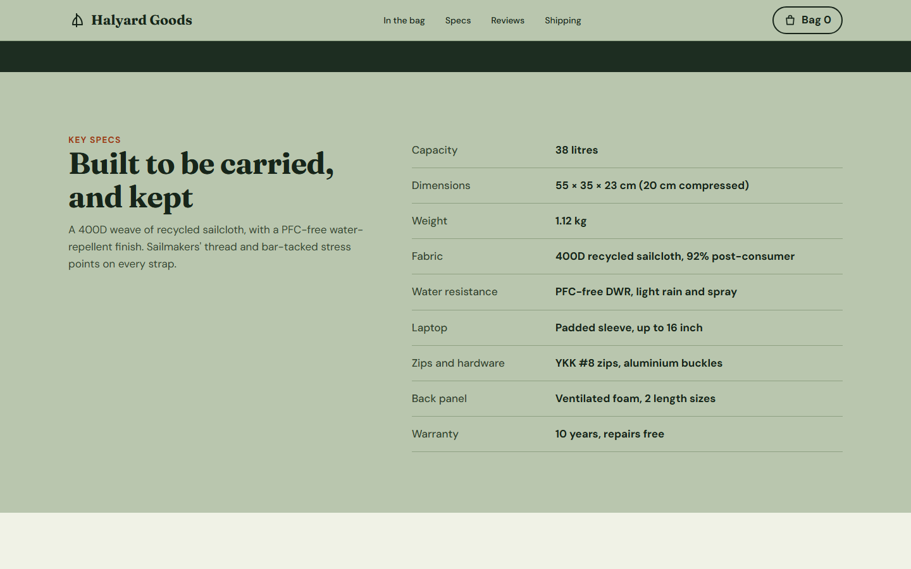
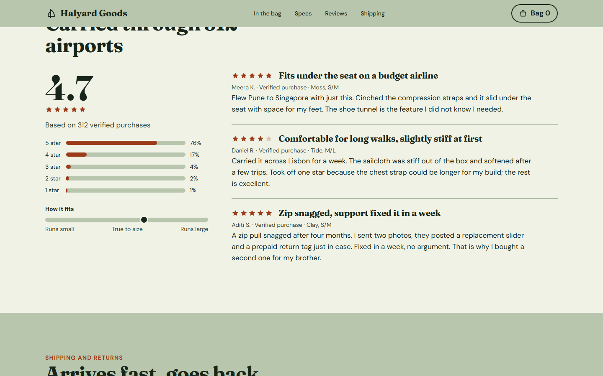
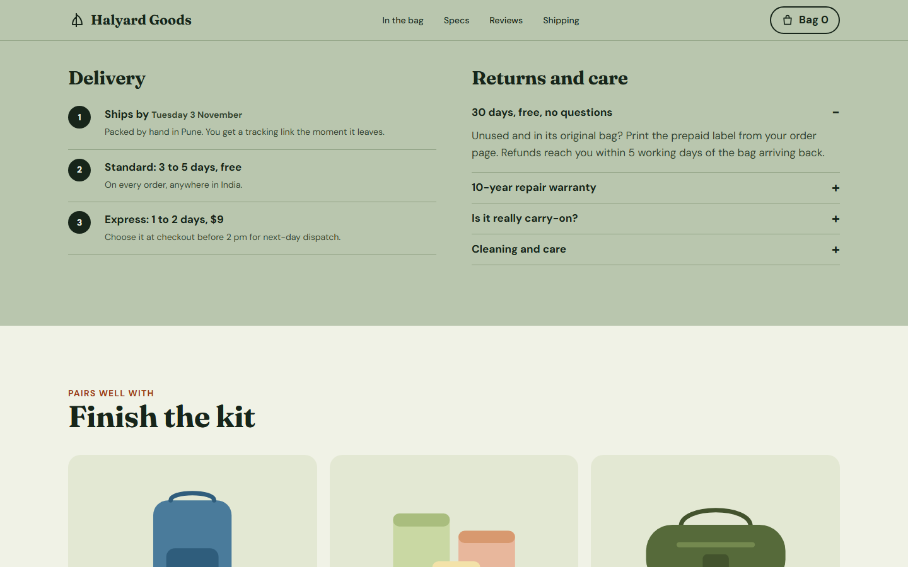
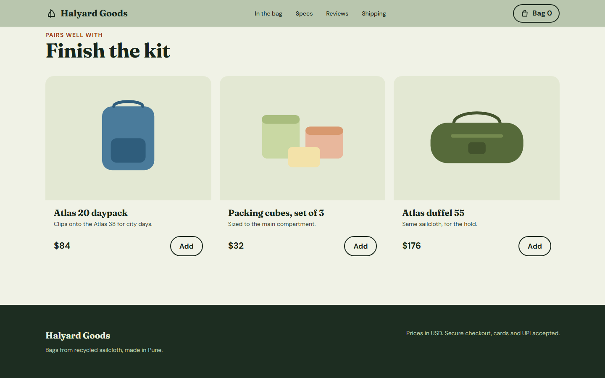

1 of 6 Atlas 38

2 of 6 38 litres, split where you / Main 24 L

3 of 6 Built to be carried, and k

4 of 6 Carried through 312 airpor / Fits under the seat on a b

5 of 6 Delivery / Returns and care

6 of 6 Atlas 20 daypack / Packing cubes, set of 3